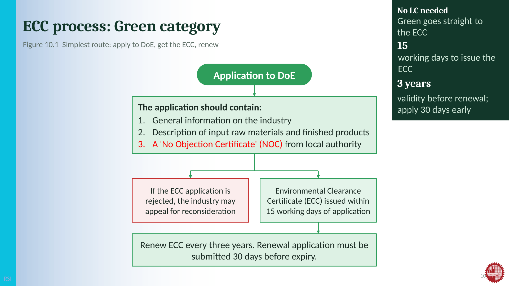
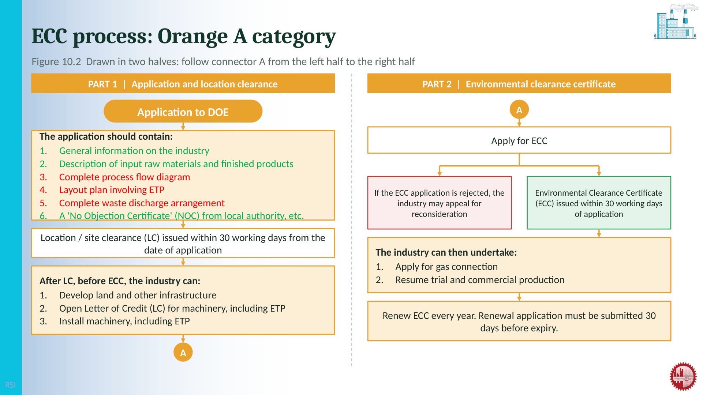
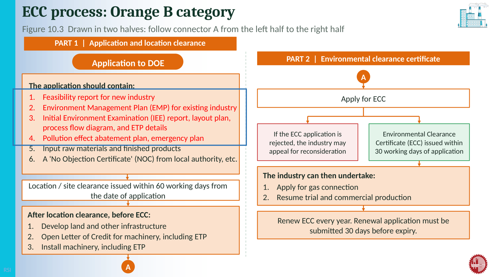
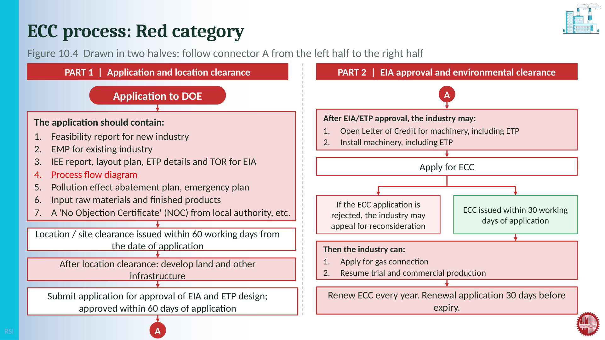
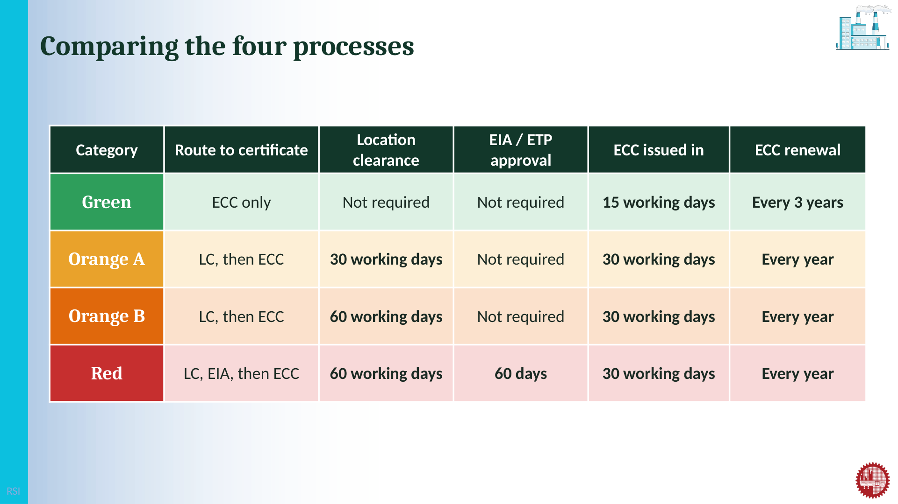
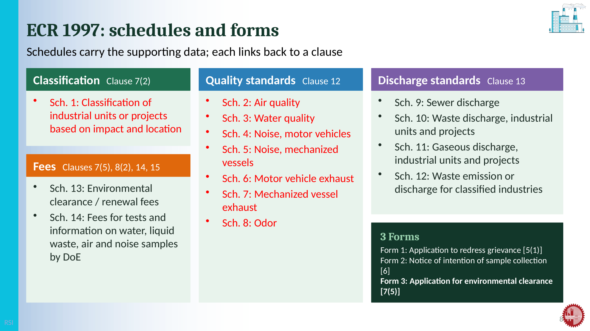

Chapter 10 covers the environmental legal framework in Bangladesh: the history of environmental legislation, the Environmental Conservation Act 1995 (ECA), and the critically important Environmental Conservation Rules 1997 (ECR), which classify industries into four categories and set the approval process for each.
| Institution | Role |
|---|---|
| DoE (Department of Environment) | Main regulatory body under Ministry of Environment; issues ECC |
| Local Authority | Issues NOC (No Objection Certificate) — first step for all industries |
| MOEF (Ministry of Environment & Forests) | Policy-making; EIA approval for Red category |

🟢 Green Category — ECC direct, no LC, 15 working days

🟡 Orange A — NOC → LC (30 days) → ECC (30 days); renewal yearly

🟠 Orange B — NOC → LC (60 days) → IEE Report → ECC (30 days); renewal yearly

🔴 Red — NOC → LC (60 days) → Full EIA + ETP → EIA approval (60 days) → ECC (30 days); renewal yearly
| Step | 🟢 Green | 🟡 Orange A | 🟠 Orange B | 🔴 Red |
|---|---|---|---|---|
| 1. NOC | ✓ Required | ✓ Required | ✓ Required | ✓ Required |
| 2. LC | ✗ Not required | 30 days | 60 days | 60 days |
| 3. IEE / EIA | None | None | IEE report | Full EIA + ETP |
| 4. ECC | 15 days | 30 days | 30 days | 30 days (after EIA) |
| EIA time | — | — | — | 60 days |
| ECC Renewal | Every 3 years | Every year | Every year | Every year |
| Term | Full Form | Who Issues |
|---|---|---|
| NOC | No Objection Certificate | Local Authority (City Corporation / Municipality / Union Parishad) |
| LC | Location Clearance | Department of Environment (DoE) |
| IEE | Initial Environmental Examination | Report submitted by proponent; DoE reviews |
| EIA | Environmental Impact Assessment | Report by proponent; MOEF approves |
| ECC | Environmental Clearance Certificate | Department of Environment (DoE) |
| ETP | Effluent Treatment Plant | Must be built and operational (Red category) |

Green / Orange A / Orange B / Red — LC, IEE/EIA, ECC timeline and renewal side by side
| Component | Count | Notes |
|---|---|---|
| Clauses | 17 | Clause 7 is the "heart" — industry categorization and ECC process |
| Schedules | 14 | Schedules list industry categories, standards, fees, etc. |
| Forms | 3 | Official application forms for LC, ECC, etc. |
An EIA is a formal study that predicts the environmental consequences of a proposed industrial project. For Red category industries it is mandatory. Contents typically include:

ECR 1997 structure — 17 clauses (Clause 7 = heart), 14 schedules, 3 forms
Under the Environmental Conservation Rules 1997 (ECR 1997), Clause 7, all industries in Bangladesh are classified into four categories based on their environmental impact:
1. Green Category (Least Hazardous): Includes TV/radio assembly, book binding, candle manufacturing, sports goods. Process: NOC from local authority → ECC directly from DoE (within 15 working days). No Location Clearance needed. ECC renewed every 3 years.
2. Orange A Category (Low Impact): Includes cattle farm, poultry, weaving mill, saw mill, furniture, printing press. Process: NOC → LC (30 days) → ECC (30 days). ECC renewed annually.
3. Orange B Category (High Impact): Includes PVC products, edible oil, jute mill, synthetic fiber, steel re-rolling. Process: NOC → LC (60 days) → IEE (Initial Environmental Examination) report → ECC (30 days). ECC renewed annually.
4. Red Category (Seriously Harmful): Includes leather/tannery, urea fertilizer, explosives, synthetic rubber, cement, textile dyeing, lead battery. Process: NOC → LC (60 days) → Full EIA report + ETP installation → EIA approval (60 days) → ECC (30 days). ECC renewed annually. ETP must be operational.
Bangladesh's environmental legislation evolved through these milestones:
An Environmental Impact Assessment (EIA) is a systematic process for identifying and evaluating the potential environmental consequences of a proposed project before it begins. It includes: project description, baseline environmental survey, impact identification and assessment, mitigation measures, environmental management plan, and public consultation.
Why mandatory for Red category: Red category industries (tanneries, chemical plants, fertilizer plants, textile dyeing) generate hazardous effluents, toxic emissions, or waste products that can cause severe and irreversible damage to air, water, soil, and human health. The EIA ensures:
Without a full EIA and approved ETP, a Red category factory cannot legally obtain an ECC (Environmental Clearance Certificate) from the Department of Environment.
An ECC (Environmental Clearance Certificate) is the official permit from the Department of Environment (DoE) that certifies an industry meets environmental standards and is allowed to operate. It is issued under the ECA 1995 and ECR 1997, and must be renewed annually (Green: every 3 years).
An NOC (No Objection Certificate) is a preliminary consent from the local authority (City Corporation, Municipality, or Union Parishad) confirming there is no local objection to the industry being set up at the proposed location. It is required by ALL categories — it comes before any DoE application.
Difference: NOC is from the local authority and is about location suitability. ECC is from the DoE and is about environmental compliance. NOC is the first step; ECC is the final environmental permit that allows legal operation.